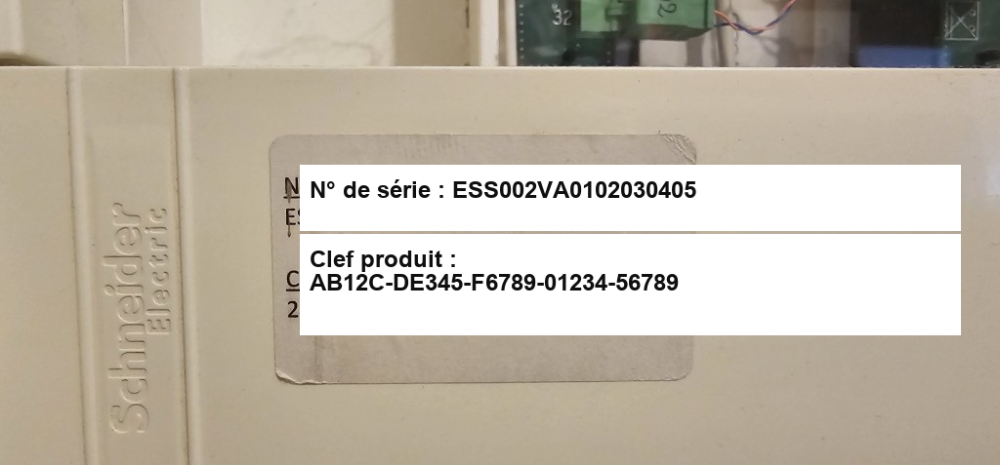
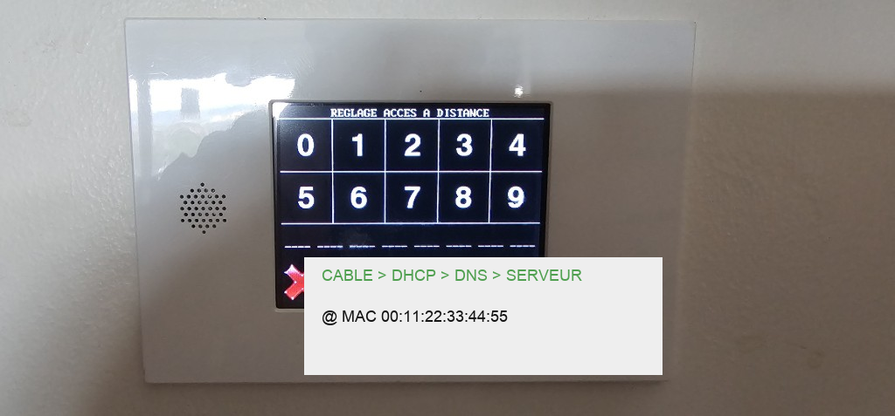

Créer votre compte et activer le portail domotique
Guide pas à pas pour vous inscrire sur www.essensys.fr,
nous transmettre les informations de votre armoire, et obtenir l’accès à la télécommande à distance sur mon.essensys.fr.
Support Essensys — Juillet 2026 https://www.essensys.fr · portail : https://mon.essensys.fr
En bref
Pour piloter votre installation à distance (volets, éclairage, scénarios…), vous devez :
Créer un compte sur www.essensys.fr
Vous connecter puis ouvrir le portail domotique sur mon.essensys.fr
Envoyer une demande de liaison avec le n° de série de votre armoire
Nous communiquer dans le message : l’adresse MAC de l’armoire et, si possible, la clé produit
Attendre la validation par l’équipe Essensys (généralement sous 48 h ouvrées)
Informations à nous transmettre
N° de série machine
Sur l’étiquette blanche dans l’armoire (ex. : ESS002VA0102030405)
Adresse MAC Ethernet
Écran Réglage accès à distance de l’armoire (ex. : 00:11:22:33:44:55)
Clé produit
Sur la même étiquette (ex. : AB12C-DE345-F6789-01234-56789) — utile pour le support
Votre e-mail
Celui utilisé lors de l’inscription
Adresse d’installation
Ville / code postal (facultatif mais recommandé dans le message)
Où trouver ces informations sur votre armoire ?
1. N° de série et clé produit
Ouvrez la porte de l’armoire électrique. Sur l’étiquette blanche Schneider Electric, notez :
N° de série — identifiant unique de votre machine
Clef produit — code de licence (5 groupes de caractères)

Étiquette à l’intérieur de l’armoire — N° de série et Clef produit
2. Adresse MAC Ethernet
Sur l’écran tactile de l’armoire, accédez au menu Réglage accès à distance.
En bas de l’écran, l’adresse MAC est affichée après @ MAC.
Les voyants CABLE → DHCP → DNS → SERVEUR indiquent l’état de la connexion Internet.
Si SERVEUR est rouge avant validation de votre compte, c’est normal : il passera au vert une fois votre liaison approuvée.

Écran « Réglage accès à distance » — adresse MAC en bas de l’écran